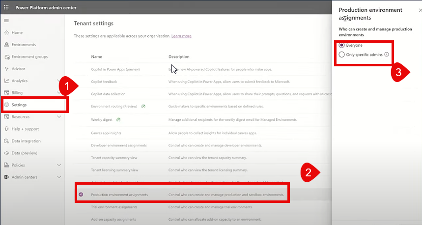

Administratorrollen
Es gibt verschiedene Administratorrollen, die Benutzern zugewiesen werden können, um Abonnementverwaltungsaktivitäten z.B. Abrechnungsverwaltung, Kennwortverwaltung und Benutzerverwaltung zu übernehmen.
Aus einer Power Platform-Perspektive gibt es zwei Microsoft Power Platform–bezogene Serviceadministratorrollen, die Sie zuweisen können, um ein hohes Maß an Administratorverwaltung bereitzustellen:
- Dynamics 365-Administrator: mit dieser Role lässt sich fast alles machen
- Trial, Sandbox, Prod Umgebungen verwalten;
- FNO and andere Dynamics apps in den Umgebungen installieren
- Einstellungen der Umgebungeb in Dataverse managen
- Umgebungsgruppen verwalten
- Microsoft Power Platform-Administrator: Die Role kann das gleiche wie Dynamics 365-Administrator und daneben noch mehr Sachen
- Dev und Teams Umgebungen managen
- Umgebungseinstellungen verwalten
- Governance und billing policies
Um die Verwaltung von Umgebungen und Einstellungen zu erleichtern, können Sie Benutzern die Rolle des Microsoft Power Platform-Administrators zuweisen.
Diese Rolle ermöglicht es, die Microsoft Power Platform auf Mandantenebene zu verwalten.
Die Zuweisung dieser Administratorrolle erfolgt über das Microsoft 365 Admin Center.
Der global admin kann natürlich auch direkt im PPAC alle Aufgaben erledingen aber in der Regel gelegiert dieser bestimmte Berechtigungen wie z.B:
- Office 365 an dem exchange administrator
- Teams an einem teams administrator
- Powerplatform Adiministration an einem Powerplatform Adiministrator. Diese Role wird auch Partner zugewiesen siehe Delegated Admin requests!!
Delegated Admin requests: Diese Funktion stellt sicher, dass Partner nur den Zugriff haben, den sie benötigen, um ihre Aufgaben auszuführen.
Als Kunde erhalten Sie im Partner Center eine Anfrage von Ihrem Partner, die Sie genehmigen müssen, um ihm Plattform-Administratorrollen zuzuweisen.
Sobald Sie die Anfrage genehmigt haben, kann Ihr Partner im Power Platform Admin Center (PPAC) in Ihrem Namen arbeiten. Er kann Umgebungen
erstellen oder andere administrative Aufgaben durchführen, um Sie bei der Nutzung der Plattform zu unterstützen.
Grunsätzlich gilt: jeder kann neue Umgebun in PPAC erstellen. Es ist aber möglich, dieses Recht nur auf bestimmte Administratoren zu beschränken.

Was ist hier unter bestimmten Administratoren gemeint?
Einstellungen für Service Level Administrator werden folgermaßen bearbeitet:

Ein service Level administrator kann all das sehen, was sich in dem tenant befindet.
in LCS gibt es Projekte und der Admin kann nur Umgebung in seinem Projekt sehen und in anderen Projekten nicht. in LCs schaffen die Projekt
eine Art isolation. In PPAC wird Isolition erreicht indem man benutzer die Role System Administrator zuweiset. das sorgt dafür,dass der benutzer in PPAC
nur die Umgebung sehen kann, in denen er die Role des System Administrator hat. So gesehen, gibt es einen Unterschieden zum Service Legel admin, der kann tenantübergrefifend sowie in einzelnen Umgebungen arbeiten